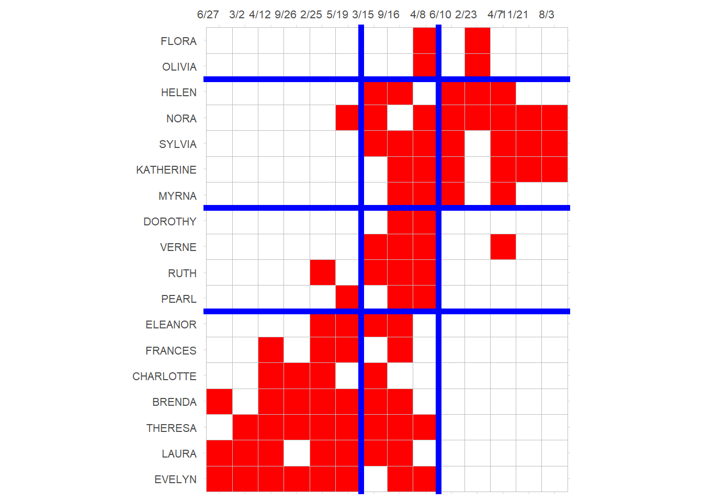
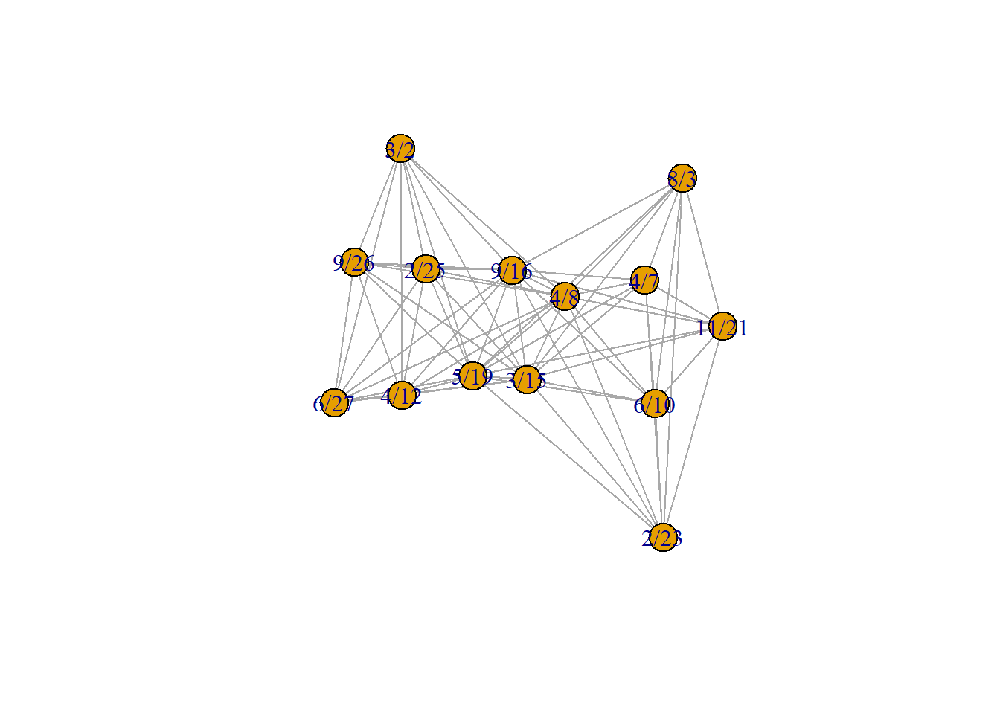
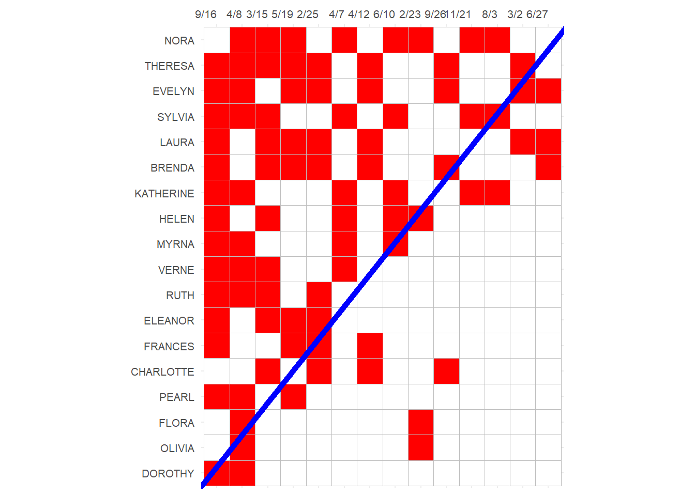
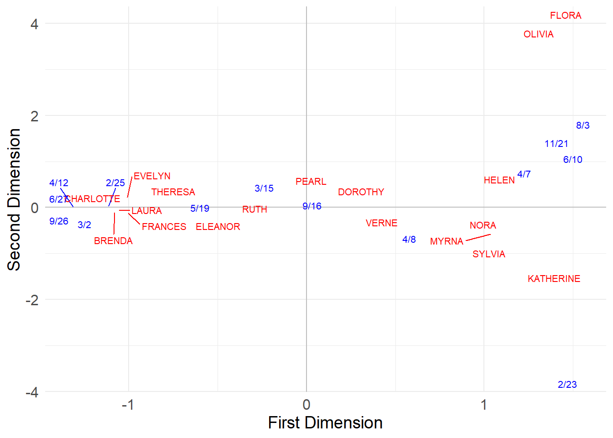
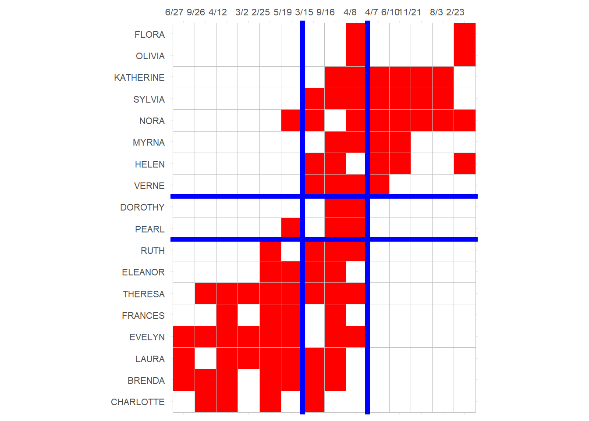

Two Mode Networks
Two Mode Networks
This handout deals with the network analysis of two-mode networks. Note that in the literature there is some terminological slippage. Two-mode networks are a type of social network. By definition two mode networks can be represented using rectangular adjacency matrices (sometimes called affiliation matrices in sociology).
In this case, two mode networks fall under the general category of “two mode data.” Any data set that has information on two types of objects (e.g., people and variables) is two-mode data so two-mode networks are just a special case of two-mode data.
In this sense, a useful distinction, due to Borgatti & Everett, is useful. This is that between the “modes” and the “ways” of a data matrix. So most data matrices are two-ways, in that they have at least two dimensions (e.g., the row and column dimensions).
But some data matrices (like the usual adjacency matrix in regular network data) only collect information on a single type of entity, so they are “one mode, two ways.” But sometimes we have network data on two sets of objects, in which case, we use a data matrix that has “two modes” (sets of nodes) and “two ways” (rows and columns).
So what makes a network a “two mode network”? Well, a two mode network is different from a regular network, because it has two sets of nodes not just one. So instead of \(V\) now we have \(V_1\) and \(V_2\). Moreover, the edges in a two-mode network only go from nodes in one set to nodes in the other set; there are no within-node-set edges.
Bipartite Graphs
This restriction makes the graph that represents a two mode network a special kind of graph called a bipartite graph. A graph is bipartite if the set of nodes in the graph can be divided into two groups, such that relations go from nodes in one set to nodes in the other set. For instance, a dating network with 100% heterosexual people in it will yield a bipartite graph based on the dating relation, with men in one set and women on the other node set.
So whether or not a graph is bipartite is something you can check for.
Let’s see how that works. Let us load the most famous two-mode network data set (kind of the Drosophila of two-mode network analysis; one of the most repeatedly analyzed social structures in history) a network composed of eighteen women from the social elite of a tiny town in the south in the 1930s who attended fourteen social events (Breiger 1974):
Now we already know this is a bipartite graph. However, let’s say you are new and you’ve never heard of these data. You can check whether the graph you loaded up is bipartite or not by using the igraph function is_bipartite:
Which returns TRUE as an answer. Had we loaded up any old non-bipartite graph, the answer would have been:
Which makes sense because that’s just a regular old graph.
Note that if we check the bipartite graph object, it looks like any other igraph object:
IGRAPH 1074643 UN-B 32 89 --
+ attr: type (v/l), name (v/c)
+ edges from 1074643 (vertex names):
[1] EVELYN --6/27 EVELYN --3/2 EVELYN --4/12 EVELYN --9/26
[5] EVELYN --2/25 EVELYN --5/19 EVELYN --9/16 EVELYN --4/8
[9] LAURA --6/27 LAURA --3/2 LAURA --4/12 LAURA --2/25
[13] LAURA --5/19 LAURA --3/15 LAURA --9/16 THERESA --3/2
[17] THERESA --4/12 THERESA --9/26 THERESA --2/25 THERESA --5/19
[21] THERESA --3/15 THERESA --9/16 THERESA --4/8 BRENDA --6/27
[25] BRENDA --4/12 BRENDA --9/26 BRENDA --2/25 BRENDA --5/19
[29] BRENDA --3/15 BRENDA --9/16 CHARLOTTE--4/12 CHARLOTTE--9/26
+ ... omitted several edgesBut we can tell that the graph is a two mode network because we have links starting with people with old lady names from the 1930s (which are also the names of a bunch of kids in middle school in 2024) and ending with events that have dates in them. So the (undirected) edge is \(person-event\).
The graph is undirected because the “membership” or “attendance” relation between a person and an organization/event doesn’t have a natural directionality.
Another way of checking the “bipartiteness” of a graph in igraph is by using the bipartite_mapping function.
Let’s see what it does:
$res
[1] TRUE
$type
EVELYN LAURA THERESA BRENDA CHARLOTTE FRANCES ELEANOR PEARL
FALSE FALSE FALSE FALSE FALSE FALSE FALSE FALSE
RUTH VERNE MYRNA KATHERINE SYLVIA NORA HELEN DOROTHY
FALSE FALSE FALSE FALSE FALSE FALSE FALSE FALSE
OLIVIA FLORA 6/27 3/2 4/12 9/26 2/25 5/19
FALSE FALSE TRUE TRUE TRUE TRUE TRUE TRUE
3/15 9/16 4/8 6/10 2/23 4/7 11/21 8/3
TRUE TRUE TRUE TRUE TRUE TRUE TRUE TRUE This function takes the candidate bipartite graph as input and returns to objects: res is just a check to see if the graph is actually bipartite (TRUE in this case), type is a logical vector of dimensions \(N + M\) (where \(N\) is the number of nodes in one set and \(M\) is the number of nodes in the other set) dividing the nodes into two groups. Here people get FALSE and events get TRUE.
We can add this as a node attribute to our graph so that way we know which node is in which set:
The Affiliation Matrix
Once you have your bipartite graph loaded up, you may want (if the graph is small enough) to check out the graph’s affiliation matrix \(A\).
This works just like before, except that now we use the as_biadjacency_matrix function:
6/27 3/2 4/12 9/26 2/25 5/19 3/15 9/16 4/8 6/10 2/23 4/7 11/21 8/3
EVELYN 1 1 1 1 1 1 0 1 1 0 0 0 0 0
LAURA 1 1 1 0 1 1 1 1 0 0 0 0 0 0
THERESA 0 1 1 1 1 1 1 1 1 0 0 0 0 0
BRENDA 1 0 1 1 1 1 1 1 0 0 0 0 0 0
CHARLOTTE 0 0 1 1 1 0 1 0 0 0 0 0 0 0
FRANCES 0 0 1 0 1 1 0 1 0 0 0 0 0 0
ELEANOR 0 0 0 0 1 1 1 1 0 0 0 0 0 0
PEARL 0 0 0 0 0 1 0 1 1 0 0 0 0 0
RUTH 0 0 0 0 1 0 1 1 1 0 0 0 0 0
VERNE 0 0 0 0 0 0 1 1 1 0 0 1 0 0
MYRNA 0 0 0 0 0 0 0 1 1 1 0 1 0 0
KATHERINE 0 0 0 0 0 0 0 1 1 1 0 1 1 1
SYLVIA 0 0 0 0 0 0 1 1 1 1 0 1 1 1
NORA 0 0 0 0 0 1 1 0 1 1 1 1 1 1
HELEN 0 0 0 0 0 0 1 1 0 1 1 1 0 0
DOROTHY 0 0 0 0 0 0 0 1 1 0 0 0 0 0
OLIVIA 0 0 0 0 0 0 0 0 1 0 1 0 0 0
FLORA 0 0 0 0 0 0 0 0 1 0 1 0 0 0In this matrix we list one set of nodes in the rows and the other set is in the columns. Each cell \(a_{ij} = 1\) if row node \(i\) is affiliated with column node \(j\), otherwise \(a_{ij} = 0\).
Basic Two Mode Network Statistics
From the affiliation (bi-adjacency) matrix we can calculate some basic network statistics. We have two number of nodes to calculate, but only one number of edges figure.
The number of nodes on the people side \(N\) is just the number of rows of \(A\):
And the number of events/groups \(M\) is just the number of columns:
Finally, the number of edges \(E\) is just the sum of all the entries of \(A\):
Degree Statistics
Because we have two sets of degrees, all the basic degree statistics in the network double up. So we have two mean degrees, two maximum degrees, and two minimum degree to take care of:
So we have:
Density
As we saw in the case of one-mode networks, one of the most basic network statistics that can be derived from the above quantities is the density. In a two-mode network, this is given by:
\[ d = \frac{E}{N \times M} \]
Where \(E\) is the number of edges in the network. In our case we can compute the density as follows:
Degree Centrality
In a two-mode network, there are two degree sets, each corresponding to one set of nodes. For the people, in this case, their degree (centrality) is just the number of events they attend, and for the groups, it’s just the number of people that attend each event.
As we have already seen, we can get each from the affiliation matrix. The degree of the people are just the row sums:
EVELYN LAURA THERESA BRENDA CHARLOTTE FRANCES ELEANOR PEARL
8 7 8 7 4 4 4 3
RUTH VERNE MYRNA KATHERINE SYLVIA NORA HELEN DOROTHY
4 4 4 6 7 8 5 2
OLIVIA FLORA
2 2 And the degree of the events are just the column sums:
6/27 3/2 4/12 9/26 2/25 5/19 3/15 9/16 4/8 6/10 2/23 4/7 11/21
3 3 6 4 8 8 10 14 12 5 4 6 3
8/3
3 As Borgatti and Everett (1997) note, if we want normalized degree centrality measures, we need to divide by either \(M\) (for people) or \(N\) (for events). That is, for people we use the number of events as the norm (as this is the theoretical maximum) and for events the number of people.
So for people, normalized degree is:
EVELYN LAURA THERESA BRENDA CHARLOTTE FRANCES ELEANOR PEARL
0.571 0.500 0.571 0.500 0.286 0.286 0.286 0.214
RUTH VERNE MYRNA KATHERINE SYLVIA NORA HELEN DOROTHY
0.286 0.286 0.286 0.429 0.500 0.571 0.357 0.143
OLIVIA FLORA
0.143 0.143 And for events:
Geodesic Distances
Geodesic distances work a bit different in two mode networks because of the only between-node-sets edges restriction.
For instance, the minimum geodesic distance \(g_{ii'}\) between two people is two (a person cannot be adjacent to another person), but it is one between a person and a group (if the person is a member of the group).
In the same way, a group \(g\) cannot be at geodesic distance less than three from a person \(p*\) who is not a member, because the shortest path is \(g-p-g^*-p^*\).
That is, there has to be some other group \(g^*\) shared between a member \(p\) of the focal group \(g\) and another person \(p^*\) for the shortest path between \(g\) and the non-member \(p^*\) to exist, and that involves three links at minimum: \(g-p\), \(p-g^*\), and \(g^*-p^*\). This means that the links in paths in two-mode networks always alternate between persons and group nodes.
Beyond that geodesic distances work the same way. In igraph when we use the distances function on a bipartite graph, we get:
EVELYN LAURA THERESA BRENDA CHARLOTTE FRANCES ELEANOR PEARL RUTH
EVELYN 0 2 2 2 2 2 2 2 2
LAURA 2 0 2 2 2 2 2 2 2
THERESA 2 2 0 2 2 2 2 2 2
BRENDA 2 2 2 0 2 2 2 2 2
CHARLOTTE 2 2 2 2 0 2 2 4 2
FRANCES 2 2 2 2 2 0 2 2 2
ELEANOR 2 2 2 2 2 2 0 2 2
PEARL 2 2 2 2 4 2 2 0 2
RUTH 2 2 2 2 2 2 2 2 0
VERNE 2 2 2 2 2 2 2 2 2
MYRNA 2 2 2 2 4 2 2 2 2
KATHERINE 2 2 2 2 4 2 2 2 2
SYLVIA 2 2 2 2 2 2 2 2 2
NORA 2 2 2 2 2 2 2 2 2
HELEN 2 2 2 2 2 2 2 2 2
DOROTHY 2 2 2 2 4 2 2 2 2
OLIVIA 2 4 2 4 4 4 4 2 2
FLORA 2 4 2 4 4 4 4 2 2
6/27 1 1 3 1 3 3 3 3 3
3/2 1 1 1 3 3 3 3 3 3
4/12 1 1 1 1 1 1 3 3 3
9/26 1 3 1 1 1 3 3 3 3
2/25 1 1 1 1 1 1 1 3 1
5/19 1 1 1 1 3 1 1 1 3
3/15 3 1 1 1 1 3 1 3 1
9/16 1 1 1 1 3 1 1 1 1
4/8 1 3 1 3 3 3 3 1 1
6/10 3 3 3 3 3 3 3 3 3
2/23 3 3 3 3 3 3 3 3 3
4/7 3 3 3 3 3 3 3 3 3
11/21 3 3 3 3 3 3 3 3 3
8/3 3 3 3 3 3 3 3 3 3
VERNE MYRNA KATHERINE SYLVIA NORA HELEN DOROTHY OLIVIA FLORA 6/27 3/2
EVELYN 2 2 2 2 2 2 2 2 2 1 1
LAURA 2 2 2 2 2 2 2 4 4 1 1
THERESA 2 2 2 2 2 2 2 2 2 3 1
BRENDA 2 2 2 2 2 2 2 4 4 1 3
CHARLOTTE 2 4 4 2 2 2 4 4 4 3 3
FRANCES 2 2 2 2 2 2 2 4 4 3 3
ELEANOR 2 2 2 2 2 2 2 4 4 3 3
PEARL 2 2 2 2 2 2 2 2 2 3 3
RUTH 2 2 2 2 2 2 2 2 2 3 3
VERNE 0 2 2 2 2 2 2 2 2 3 3
MYRNA 2 0 2 2 2 2 2 2 2 3 3
KATHERINE 2 2 0 2 2 2 2 2 2 3 3
SYLVIA 2 2 2 0 2 2 2 2 2 3 3
NORA 2 2 2 2 0 2 2 2 2 3 3
HELEN 2 2 2 2 2 0 2 2 2 3 3
DOROTHY 2 2 2 2 2 2 0 2 2 3 3
OLIVIA 2 2 2 2 2 2 2 0 2 3 3
FLORA 2 2 2 2 2 2 2 2 0 3 3
6/27 3 3 3 3 3 3 3 3 3 0 2
3/2 3 3 3 3 3 3 3 3 3 2 0
4/12 3 3 3 3 3 3 3 3 3 2 2
9/26 3 3 3 3 3 3 3 3 3 2 2
2/25 3 3 3 3 3 3 3 3 3 2 2
5/19 3 3 3 3 1 3 3 3 3 2 2
3/15 1 3 3 1 1 1 3 3 3 2 2
9/16 1 1 1 1 3 1 1 3 3 2 2
4/8 1 1 1 1 1 3 1 1 1 2 2
6/10 3 1 1 1 1 1 3 3 3 4 4
2/23 3 3 3 3 1 1 3 1 1 4 4
4/7 1 1 1 1 1 1 3 3 3 4 4
11/21 3 3 1 1 1 3 3 3 3 4 4
8/3 3 3 1 1 1 3 3 3 3 4 4
4/12 9/26 2/25 5/19 3/15 9/16 4/8 6/10 2/23 4/7 11/21 8/3
EVELYN 1 1 1 1 3 1 1 3 3 3 3 3
LAURA 1 3 1 1 1 1 3 3 3 3 3 3
THERESA 1 1 1 1 1 1 1 3 3 3 3 3
BRENDA 1 1 1 1 1 1 3 3 3 3 3 3
CHARLOTTE 1 1 1 3 1 3 3 3 3 3 3 3
FRANCES 1 3 1 1 3 1 3 3 3 3 3 3
ELEANOR 3 3 1 1 1 1 3 3 3 3 3 3
PEARL 3 3 3 1 3 1 1 3 3 3 3 3
RUTH 3 3 1 3 1 1 1 3 3 3 3 3
VERNE 3 3 3 3 1 1 1 3 3 1 3 3
MYRNA 3 3 3 3 3 1 1 1 3 1 3 3
KATHERINE 3 3 3 3 3 1 1 1 3 1 1 1
SYLVIA 3 3 3 3 1 1 1 1 3 1 1 1
NORA 3 3 3 1 1 3 1 1 1 1 1 1
HELEN 3 3 3 3 1 1 3 1 1 1 3 3
DOROTHY 3 3 3 3 3 1 1 3 3 3 3 3
OLIVIA 3 3 3 3 3 3 1 3 1 3 3 3
FLORA 3 3 3 3 3 3 1 3 1 3 3 3
6/27 2 2 2 2 2 2 2 4 4 4 4 4
3/2 2 2 2 2 2 2 2 4 4 4 4 4
4/12 0 2 2 2 2 2 2 4 4 4 4 4
9/26 2 0 2 2 2 2 2 4 4 4 4 4
2/25 2 2 0 2 2 2 2 4 4 4 4 4
5/19 2 2 2 0 2 2 2 2 2 2 2 2
3/15 2 2 2 2 0 2 2 2 2 2 2 2
9/16 2 2 2 2 2 0 2 2 2 2 2 2
4/8 2 2 2 2 2 2 0 2 2 2 2 2
6/10 4 4 4 2 2 2 2 0 2 2 2 2
2/23 4 4 4 2 2 2 2 2 0 2 2 2
4/7 4 4 4 2 2 2 2 2 2 0 2 2
11/21 4 4 4 2 2 2 2 2 2 2 0 2
8/3 4 4 4 2 2 2 2 2 2 2 2 0Which is a square matrix of dimensions \((M + N) \times (M + N)\); that’s \((18 + 14) \times (18 + 14) = 32 \times 32\) in our case.
We can check in R:
As we can see in the distance matrix, distances between nodes in the same set are even \(g_{ii'|jj'} = \{2, 4, \ldots\}\) but distances in nodes in different sets are odd \(g_{ij|ji} = \{1, 3, \ldots\}\). Beyond this hiccup, distances can be interpreted in the same way as one-mode networks.
Closeness Centrality in Two Mode Networks
This means that (unnormalized) closeness centrality works the same way as it does in regular networks:
EVELYN LAURA THERESA BRENDA CHARLOTTE FRANCES ELEANOR PEARL
0.017 0.015 0.017 0.015 0.013 0.014 0.014 0.014
RUTH VERNE MYRNA KATHERINE SYLVIA NORA HELEN DOROTHY
0.015 0.015 0.014 0.015 0.016 0.017 0.015 0.014
OLIVIA FLORA 6/27 3/2 4/12 9/26 2/25 5/19
0.012 0.012 0.012 0.012 0.013 0.012 0.014 0.016
3/15 9/16 4/8 6/10 2/23 4/7 11/21 8/3
0.017 0.019 0.018 0.013 0.012 0.013 0.012 0.012 Which is just the inverse of the sums of the distances matrix for people and groups counting their geodesic distances to nodes of both sets.
However, as Borgatti and Everett (1997) note, if we want normalized closeness centralities, we can’t use the off-the-shelf normalization for one-mode networks in igraph (\(n-1\)) as it will give us non-sense results because now we have two sets of nodes.
Instead, we need to normalize the closeness score for each node set by its theoretical maximum for each node set.
For people, this is:
\[ N + 2(M - 1) \]
And for groups/events this same quantity is:
\[ M + 2(N - 1) \]
The basic idea is that nodes can be at minimum geodesic distance \(g = 1\) from nodes of the other set (for people, groups; for groups, people) and at minimum distance \(g = 2\) from nodes of their own set, with their own presence eliminated by subtraction (Borgatti and Everett 1997).
In our case, we create a normalization vector with these quantities of length \(M + N\):
And normalized closeness is:
EVELYN LAURA THERESA BRENDA CHARLOTTE FRANCES ELEANOR PEARL
0.800 0.727 0.800 0.727 0.600 0.667 0.667 0.667
RUTH VERNE MYRNA KATHERINE SYLVIA NORA HELEN DOROTHY
0.706 0.706 0.686 0.727 0.774 0.800 0.727 0.649
OLIVIA FLORA 6/27 3/2 4/12 9/26 2/25 5/19
0.585 0.585 0.524 0.524 0.564 0.537 0.595 0.688
3/15 9/16 4/8 6/10 2/23 4/7 11/21 8/3
0.733 0.846 0.786 0.550 0.537 0.564 0.524 0.524 Which are the same numbers in Borgatti and Everett (1997, table 1, column 6).
Betweenness Centrality in Two Mode Networks
As Borgatti and Everett (1997) also note, the normalizations for betweenness centrality in the two mode case are a bit more involved. This is because they depend on which node set is larger than the other.
For the larger node set, which in our case is the people, the normalization is:
\[ 2(M-1)(N-1) \]
For the smaller node set, which in our case is the groups/events, the normalization is:
\[ \frac{1}{2}(N)(N-1)+\frac{1}{2}(M-1)(M-2)+(M-1)(N-1) \]
Remember that you have to switch this around if you are analyzing a network with more groups than people.
Creating the relevant vectors:
And normalized betweenness is:
EVELYN LAURA THERESA BRENDA CHARLOTTE FRANCES ELEANOR PEARL
9.72 5.17 8.82 4.98 1.07 1.08 0.95 0.68
RUTH VERNE MYRNA KATHERINE SYLVIA NORA HELEN DOROTHY
1.69 1.58 1.65 4.77 7.22 11.42 4.27 0.20
OLIVIA FLORA 6/27 3/2 4/12 9/26 2/25 5/19
0.51 0.51 0.22 0.21 1.84 0.78 3.80 6.56
3/15 9/16 4/8 6/10 2/23 4/7 11/21 8/3
13.07 24.60 22.75 1.15 1.98 1.83 0.23 0.23 Which are (with some slight differences and rounding errors) the same numbers in Borgatti and Everett (1997, table 2, column 3).
The Duality of Persons and Groups
Remember that in the one-mode case, multiplying the adjacency matrix times its transpose yields the common neighbors matrix \(\mathbf{M}\):
\[ \mathbf{M} = \mathbf{A}\mathbf{A}^T \]
As famously noted by Breiger (1974), doing the same for the affiliation matrix of a two-mode network also returns the common-neighbors matrix, but because objects in one mode can only connect to objects in another mode, this also reveals the duality of persons and groups: The connections between people are made up of the groups they share, and the connections between groups are revealed by the groups they share.
Thus, computing the common neighbors matrix for both persons and groups (also called the projection of the two-mode network into each of its modes) produces a one-mode similarity matrix between people and groups, where the similarities are defined by the number of objects in the other mode that they share.
So for the people the relevant projection is:
\[ \mathbf{P} = \mathbf{A}\mathbf{A}^T \]
And for the groups:
\[ \mathbf{G} = \mathbf{A}^T\mathbf{A} \]
Which in our case yields:
EVELYN LAURA THERESA BRENDA CHARLOTTE FRANCES ELEANOR PEARL RUTH
EVELYN 8 6 7 6 3 4 3 3 3
LAURA 6 7 6 6 3 4 4 2 3
THERESA 7 6 8 6 4 4 4 3 4
BRENDA 6 6 6 7 4 4 4 2 3
CHARLOTTE 3 3 4 4 4 2 2 0 2
FRANCES 4 4 4 4 2 4 3 2 2
ELEANOR 3 4 4 4 2 3 4 2 3
PEARL 3 2 3 2 0 2 2 3 2
RUTH 3 3 4 3 2 2 3 2 4
VERNE 2 2 3 2 1 1 2 2 3
MYRNA 2 1 2 1 0 1 1 2 2
KATHERINE 2 1 2 1 0 1 1 2 2
SYLVIA 2 2 3 2 1 1 2 2 3
NORA 2 2 3 2 1 1 2 2 2
HELEN 1 2 2 2 1 1 2 1 2
DOROTHY 2 1 2 1 0 1 1 2 2
OLIVIA 1 0 1 0 0 0 0 1 1
FLORA 1 0 1 0 0 0 0 1 1
VERNE MYRNA KATHERINE SYLVIA NORA HELEN DOROTHY OLIVIA FLORA
EVELYN 2 2 2 2 2 1 2 1 1
LAURA 2 1 1 2 2 2 1 0 0
THERESA 3 2 2 3 3 2 2 1 1
BRENDA 2 1 1 2 2 2 1 0 0
CHARLOTTE 1 0 0 1 1 1 0 0 0
FRANCES 1 1 1 1 1 1 1 0 0
ELEANOR 2 1 1 2 2 2 1 0 0
PEARL 2 2 2 2 2 1 2 1 1
RUTH 3 2 2 3 2 2 2 1 1
VERNE 4 3 3 4 3 3 2 1 1
MYRNA 3 4 4 4 3 3 2 1 1
KATHERINE 3 4 6 6 5 3 2 1 1
SYLVIA 4 4 6 7 6 4 2 1 1
NORA 3 3 5 6 8 4 1 2 2
HELEN 3 3 3 4 4 5 1 1 1
DOROTHY 2 2 2 2 1 1 2 1 1
OLIVIA 1 1 1 1 2 1 1 2 2
FLORA 1 1 1 1 2 1 1 2 2 6/27 3/2 4/12 9/26 2/25 5/19 3/15 9/16 4/8 6/10 2/23 4/7 11/21 8/3
6/27 3 2 3 2 3 3 2 3 1 0 0 0 0 0
3/2 2 3 3 2 3 3 2 3 2 0 0 0 0 0
4/12 3 3 6 4 6 5 4 5 2 0 0 0 0 0
9/26 2 2 4 4 4 3 3 3 2 0 0 0 0 0
2/25 3 3 6 4 8 6 6 7 3 0 0 0 0 0
5/19 3 3 5 3 6 8 5 7 4 1 1 1 1 1
3/15 2 2 4 3 6 5 10 8 5 3 2 4 2 2
9/16 3 3 5 3 7 7 8 14 9 4 1 5 2 2
4/8 1 2 2 2 3 4 5 9 12 4 3 5 3 3
6/10 0 0 0 0 0 1 3 4 4 5 2 5 3 3
2/23 0 0 0 0 0 1 2 1 3 2 4 2 1 1
4/7 0 0 0 0 0 1 4 5 5 5 2 6 3 3
11/21 0 0 0 0 0 1 2 2 3 3 1 3 3 3
8/3 0 0 0 0 0 1 2 2 3 3 1 3 3 3The off-diagonal entries of these square person by person (group by group) matrices is the number of groups (people) shared by each person (group) and the diagonals are the number of memberships of each person (the size of each group/event).
Normalized Vertex Similarity Metrics
Note that the one-mode projections are unnormalized similarity matrices just like in the case of regular networks. That means that if we have the degrees of nodes in each mode, we can transform this matrix into any of the normalized vertex similarity metrics we discussed before, including Jaccard, Cosine, Dice, LHN, and so on.
Thus repackaging our vertex similarity function for the two mode case, we have:
vertex.sim <- function(x) {
A <- as.matrix(as_biadjacency_matrix(x))
M <- nrow(A) #number of persons
N <- ncol(A) #number of groups
p.d <- rowSums(A) #person degrees
g.d <- colSums(A) #group degrees
P <- A %*% t(A) #person projection
G <- t(A) %*% A #group projection
J.p <- diag(1, M, M)
J.g <- diag(1, N, N)
C.p <- diag(1, M, M)
C.g <- diag(1, N, N)
D.p <- diag(1, M, M)
D.g <- diag(1, N, N)
L.p <- diag(1, M, M)
L.g <- diag(1, N, N)
for (i in 1:M) {
for (j in 1:M) {
if (i < j) {
J.p[i,j] <- P[i,j]/(P[i,j] + p.d[i] + p.d[j])
J.p[j,i] <- P[i,j]/(P[i,j] + p.d[i] + p.d[j])
C.p[i,j] <- P[i,j]/(sqrt(p.d[i] * p.d[j]))
C.p[j,i] <- P[i,j]/(sqrt(p.d[i] * p.d[j]))
D.p[i,j] <- (2*P[i,j])/(2*P[i,j] + p.d[i] + p.d[j])
D.p[j,i] <- (2*P[i,j])/(2*P[i,j] + p.d[i] + p.d[j])
L.p[i,j] <- P[i,j]/(p.d[i] * p.d[j])
L.p[j,i] <- P[i,j]/(p.d[i] * p.d[j])
}
}
}
for (i in 1:N) {
for (j in 1:N) {
if (i < j) {
J.g[i,j] <- G[i,j]/(G[i,j] + g.d[i] + g.d[j])
J.g[j,i] <- G[i,j]/(G[i,j] + g.d[i] + g.d[j])
C.g[i,j] <- G[i,j]/(sqrt(g.d[i] * g.d[j]))
C.g[j,i] <- G[i,j]/(sqrt(g.d[i] * g.d[j]))
D.g[i,j] <- (2*G[i,j])/(2*G[i,j] + g.d[i] + g.d[j])
D.g[j,i] <- (2*G[i,j])/(2*G[i,j] + g.d[i] + g.d[j])
L.g[i,j] <- G[i,j]/(g.d[i] * g.d[j])
L.g[j,i] <- G[i,j]/(g.d[i] * g.d[j])
}
}
}
return(list(J.p = J.p, C.p = C.p, D.p = D.p, L.p = L.p,
J.g = J.g, C.g = C.g, D.g = D.g, L.g = L.g))
}Using this function to compute the Jaccard similarity between people yields:
EVELYN LAURA THERESA BRENDA CHARLOTTE FRANCES ELEANOR PEARL RUTH
EVELYN 1.00 0.29 0.30 0.29 0.20 0.25 0.20 0.21 0.20
LAURA 0.29 1.00 0.29 0.30 0.21 0.27 0.27 0.17 0.21
THERESA 0.30 0.29 1.00 0.29 0.25 0.25 0.25 0.21 0.25
BRENDA 0.29 0.30 0.29 1.00 0.27 0.27 0.27 0.17 0.21
CHARLOTTE 0.20 0.21 0.25 0.27 1.00 0.20 0.20 0.00 0.20
FRANCES 0.25 0.27 0.25 0.27 0.20 1.00 0.27 0.22 0.20
ELEANOR 0.20 0.27 0.25 0.27 0.20 0.27 1.00 0.22 0.27
PEARL 0.21 0.17 0.21 0.17 0.00 0.22 0.22 1.00 0.22
RUTH 0.20 0.21 0.25 0.21 0.20 0.20 0.27 0.22 1.00
VERNE 0.14 0.15 0.20 0.15 0.11 0.11 0.20 0.22 0.27
MYRNA 0.14 0.08 0.14 0.08 0.00 0.11 0.11 0.22 0.20
KATHERINE 0.12 0.07 0.12 0.07 0.00 0.09 0.09 0.18 0.17
SYLVIA 0.12 0.12 0.17 0.12 0.08 0.08 0.15 0.17 0.21
NORA 0.11 0.12 0.16 0.12 0.08 0.08 0.14 0.15 0.14
HELEN 0.07 0.14 0.13 0.14 0.10 0.10 0.18 0.11 0.18
DOROTHY 0.17 0.10 0.17 0.10 0.00 0.14 0.14 0.29 0.25
OLIVIA 0.09 0.00 0.09 0.00 0.00 0.00 0.00 0.17 0.14
FLORA 0.09 0.00 0.09 0.00 0.00 0.00 0.00 0.17 0.14
VERNE MYRNA KATHERINE SYLVIA NORA HELEN DOROTHY OLIVIA FLORA
EVELYN 0.14 0.14 0.12 0.12 0.11 0.07 0.17 0.09 0.09
LAURA 0.15 0.08 0.07 0.12 0.12 0.14 0.10 0.00 0.00
THERESA 0.20 0.14 0.12 0.17 0.16 0.13 0.17 0.09 0.09
BRENDA 0.15 0.08 0.07 0.12 0.12 0.14 0.10 0.00 0.00
CHARLOTTE 0.11 0.00 0.00 0.08 0.08 0.10 0.00 0.00 0.00
FRANCES 0.11 0.11 0.09 0.08 0.08 0.10 0.14 0.00 0.00
ELEANOR 0.20 0.11 0.09 0.15 0.14 0.18 0.14 0.00 0.00
PEARL 0.22 0.22 0.18 0.17 0.15 0.11 0.29 0.17 0.17
RUTH 0.27 0.20 0.17 0.21 0.14 0.18 0.25 0.14 0.14
VERNE 1.00 0.27 0.23 0.27 0.20 0.25 0.25 0.14 0.14
MYRNA 0.27 1.00 0.29 0.27 0.20 0.25 0.25 0.14 0.14
KATHERINE 0.23 0.29 1.00 0.32 0.26 0.21 0.20 0.11 0.11
SYLVIA 0.27 0.27 0.32 1.00 0.29 0.25 0.18 0.10 0.10
NORA 0.20 0.20 0.26 0.29 1.00 0.24 0.09 0.17 0.17
HELEN 0.25 0.25 0.21 0.25 0.24 1.00 0.12 0.12 0.12
DOROTHY 0.25 0.25 0.20 0.18 0.09 0.12 1.00 0.20 0.20
OLIVIA 0.14 0.14 0.11 0.10 0.17 0.12 0.20 1.00 0.33
FLORA 0.14 0.14 0.11 0.10 0.17 0.12 0.20 0.33 1.00Structural Equivalence
And, of course, once we have a similarity we can cluster nodes based on approximate structural equivalence by transforming proximities to distances:
And for events:
J.g <- vertex.sim(g)$J.g
rownames(J.g) <- colnames(A)
colnames(J.g) <- colnames(A)
D <- as.dist(1- J.g)
hc.g <- hclust(D, method = "ward.D2")
plot(hc.g)
We can then derive cluster memberships for people and groups from the hclust object:
EVELYN LAURA THERESA BRENDA CHARLOTTE FRANCES ELEANOR PEARL
1 1 1 1 1 1 1 2
RUTH VERNE DOROTHY MYRNA KATHERINE SYLVIA NORA HELEN
2 2 2 3 3 3 3 3
OLIVIA FLORA
4 4 6/27 3/2 4/12 9/26 2/25 5/19 3/15 9/16 4/8 6/10 2/23 4/7 11/21
1 1 1 1 1 1 2 2 2 3 3 3 3
8/3
3 And finally we can block the original affiliation matrix, as recommended by Everett and Borgatti (2013, 210, table 5):
library(ggcorrplot)
p <- ggcorrplot(t(A[names(clus.p), names(clus.g)]),
colors = c("white", "white", "red"))
p <- p + theme(legend.position = "none",
axis.text.y = element_text(size = 8),
axis.text.x = element_text(size = 8, angle = 0),
)
p <- p + scale_x_discrete(position = "top")
p <- p + geom_hline(yintercept = 7.5, linewidth = 2, color = "blue")
p <- p + geom_hline(yintercept = 11.5, linewidth = 2, color = "blue")
p <- p + geom_hline(yintercept = 16.5, linewidth = 2, color = "blue")
p <- p + geom_vline(xintercept = 6.5, linewidth = 2, color = "blue")
p <- p + geom_vline(xintercept = 9.5, linewidth = 2, color = "blue")
p
Which reveals a number of almost complete (one-blocks) and almost null (zero-blocks) in the social structure, with a reduced image matrix that looks like:
library(kableExtra)
IM <- matrix(0, 4, 3)
IM[1, ] <- c(0, 1, 0)
IM[2, ] <- c(0, 1, 1)
IM[3, ] <- c(0, 1, 0)
IM[4, ] <- c(1, 1, 0)
rownames(IM) <- c("P.Block1", "P.Block2", "P.Block3", "P.Block4")
colnames(IM) <- c("E.Block1", "E.Block2", "E.Block3")
kbl(IM, format = "html", , align = "c") %>%
column_spec(1, bold = TRUE) %>%
kable_styling(full_width = TRUE,
bootstrap_options = c("hover", "condensed", "responsive"))| E.Block1 | E.Block2 | E.Block3 | |
|---|---|---|---|
| P.Block1 | 0 | 1 | 0 |
| P.Block2 | 0 | 1 | 1 |
| P.Block3 | 0 | 1 | 0 |
| P.Block4 | 1 | 1 | 0 |
Eigenvector Status
Measures of status and prestige are particularly applicable to two mode networks. The reason is that the reflective principle behind these measures interacts nicely with the duality principle.
For instance, when it comes to eigenvector-style measures, the neat idea that people are central if they belong to central groups and groups and central if their members are central people (with people centrality defined by membership in central groups) can be effectively captured by these metrics (Bonacich 1991).
Thus if \(x\) are the status scores for people, and \(y\) are the status scores for groups, then the \(x\) scores should be given by the sum of the \(y\) scores of the groups each person belongs, and the \(y\) scores should be given by the sum of the \(x\) scores of their members.
In mathese:
\[ x = \mathbf{A}^Ty \]
\[ y = \mathbf{A}x \]
Once again, producing another instance of a cat chasing its own tail (we need to know the values of \(y\) to figure out the values of \(x\) and we need to know the values of \(x\) to figure out the values of \(y\)).
How do we proceed? Well, let’s bring back our trusty status distribution game:
status1 <- function(A) {
n <- nrow(A) #number of actors
x <- rep(1, n) #initial status vector set to all ones
w <- 1
k <- 0 #initializing counter
while (w > 0.0001) {
o.x <- x #old status scores
x <- A %*% x #new scores a function of old scores and adjacency matrix
x <- x/norm(x, type = "E") #normalizing new status scores
w <- abs(sum(abs(x) - abs(o.x))) #diff. between new and old scores
k <- k + 1 #incrementing while counter
}
return(as.vector(x))
}Then the main question is over what matrix will the status game be played for both people and groups?
As Bonacich (1991) noted, the projection matrices of Breiger (1974) are natural candidates for this task. Let’s try it out.
For people this would be:
EVELYN LAURA THERESA BRENDA CHARLOTTE FRANCES ELEANOR PEARL
0.335 0.309 0.371 0.313 0.168 0.209 0.228 0.180
RUTH VERNE MYRNA KATHERINE SYLVIA NORA HELEN DOROTHY
0.236 0.218 0.187 0.220 0.277 0.264 0.201 0.131
OLIVIA FLORA
0.070 0.070 And for groups:
6/27 3/2 4/12 9/26 2/25 5/19 3/15 9/16 4/8 6/10 2/23 4/7 11/21
0.142 0.150 0.253 0.176 0.322 0.328 0.384 0.507 0.380 0.170 0.090 0.203 0.113
8/3
0.113 Lo and behold, these are the status scores we seek. It turns out they can be computed by figuring out the leading eigenvector (what our status game does for any matrix) of the Breiger projection matrices (Bonacich 1991):
\[ \lambda x = (\mathbf{A}\mathbf{A}^T)x \]
\[ \lambda y = (\mathbf{A}^T\mathbf{A})y \]
Neat! The scores are also readily interpretable: The most central people belong to the most central (largest membership) groups and the most central groups are the ones with the most central (highest activity) members.
In the Southern Women data the dual centralities are:
library(kableExtra)
p.dat <- data.frame(People = rownames(A), Eig.Cent = round(p.s, 3))
p.dat <- p.dat[order(p.dat$Eig.Cent, decreasing = TRUE), ]
kbl(p.dat, format = "html", , align = c("l", "c"), row.names = FALSE) %>%
column_spec(1, bold = TRUE) %>%
kable_styling(full_width = TRUE,
bootstrap_options = c("hover", "condensed", "responsive"))| People | Eig.Cent |
|---|---|
| THERESA | 0.371 |
| EVELYN | 0.335 |
| BRENDA | 0.313 |
| LAURA | 0.309 |
| SYLVIA | 0.277 |
| NORA | 0.264 |
| RUTH | 0.236 |
| ELEANOR | 0.228 |
| KATHERINE | 0.220 |
| VERNE | 0.218 |
| FRANCES | 0.209 |
| HELEN | 0.201 |
| MYRNA | 0.187 |
| PEARL | 0.180 |
| CHARLOTTE | 0.168 |
| DOROTHY | 0.131 |
| OLIVIA | 0.070 |
| FLORA | 0.070 |
g.dat <- data.frame(Groups = colnames(A), Eig.Cent = round(g.s, 3))
g.dat <- g.dat[order(g.dat$Eig.Cent, decreasing = TRUE), ]
kbl(g.dat, format = "html", align = c("l", "c"), row.names = FALSE) %>%
column_spec(1, bold = TRUE) %>%
kable_styling(full_width = TRUE,
bootstrap_options = c("hover", "condensed", "responsive"))| Groups | Eig.Cent |
|---|---|
| 9/16 | 0.507 |
| 3/15 | 0.384 |
| 4/8 | 0.380 |
| 5/19 | 0.328 |
| 2/25 | 0.322 |
| 4/12 | 0.253 |
| 4/7 | 0.203 |
| 9/26 | 0.176 |
| 6/10 | 0.170 |
| 3/2 | 0.150 |
| 6/27 | 0.142 |
| 11/21 | 0.113 |
| 8/3 | 0.113 |
| 2/23 | 0.090 |
Core and Periphery
As noted by Borgatti and Everett (2000), the Bonacich Eigenvector scores are also a model of a core-periphery partition in the two mode network. This is already evident in the definition of the dual centralities: Popular actors (who participate in many events) make the events they participate in more central, and central events (that have many actors) become central when they attract the popular kids.
So the Eigenvector scores can be used to partition any two mode network into a core (popular kids, popular events) and a periphery (less popular kids, less popular events). All we need to do to see the partition is to re-order the rows and columns of the affiliation matrix according to the value of the magnitude of the Eigenvector scores for people and events:
p <- ggcorrplot(t(A[order(p.s), order(g.s)]),
colors = c("white", "white", "red"))
p <- p + theme(legend.position = "none",
axis.text.y = element_text(size = 8),
axis.text.x = element_text(size = 8, angle = 0),
)
p <- p + scale_x_discrete(position = "top")
p <- p + geom_hline(yintercept = 10.5, linewidth = 2, color = "blue")
p <- p + geom_vline(xintercept = 8.5, linewidth = 2, color = "blue")
p
Here the upper-right block reveals the core actors and events in the network; namely, the events almost universally attended by the most active participants (Everett and Borgatti 2013, table 2).
PageRank Status
We can, of course, also play our status game with degree-normalized versions of the affiliation matrix (a.k.a. PageRank).
First we need to create row stochastic versions of \(\mathbf{A}\) and \(\mathbf{A}^T\). Recall that a matrix is row stochastic if their rows sum to one.
For the people, we can do this by taking the original affiliation matrix, and pre-multiplying it by a diagonal square matrix \(\mathbf{D}_P^{-1}\) of dimensions \(M \times M\) containing the inverse of the degrees of each person in the affiliation network along the diagonals and zeros everywhere else, yielding the row-stochastic matrix \(\mathbf{P}_P\) of dimensions \(M \times N\):
\[ \mathbf{P}_P = \mathbf{D}_P^{-1}\mathbf{A} \]
And we can do the same with the groups, except that we pre-multiply the transpose of the original affiliation matrix by \(\mathbf{D}_G^{-1}\) which is an \(N \times N\) matrix containing the inverse of the size of each group along the diagonals and zero everywhere else, this yields the matrix \(\mathbf{P}_G\) of dimensions \(N \times M\):
\[ \mathbf{P}_G = \mathbf{D}_G^{-1}\mathbf{A}^T \]
In R can compute \(\mathbf{P}_P\) and \(\mathbf{P}_G\) as follows:
And we can check that both P.p (for people) and P.g (groups) are row stochastic:
And that they are of the predicted dimensions:
Great! Now, we can obtain the degree-normalized projections for people by multiplying \(\mathbf{P}_P\) times \(\mathbf{P}_G\):
\[ \mathbf{P}_{PP} = \mathbf{P}_P\mathbf{P}_G \]
Which produces the matrix \(\mathbf{P}_{PP}\) a square \(M \times M\) matrix containing the degree-normalized similarities between each pair of people.
We then do the same for groups:
\[ \mathbf{P}_{GG} = \mathbf{P}_G\mathbf{P}_P \]
Which produces the matrix \(\mathbf{P}_{GG}\) a square \(N \times N\) matrix containing the degree-normalized similarities between each pair of groups.
In R we obtain these matrices as follows:
Which are still row stochastic–but now square–matrices:
EVELYN LAURA THERESA BRENDA CHARLOTTE FRANCES ELEANOR PEARL
1 1 1 1 1 1 1 1
RUTH VERNE MYRNA KATHERINE SYLVIA NORA HELEN DOROTHY
1 1 1 1 1 1 1 1
OLIVIA FLORA
1 1 6/27 3/2 4/12 9/26 2/25 5/19 3/15 9/16 4/8 6/10 2/23 4/7 11/21
1 1 1 1 1 1 1 1 1 1 1 1 1
8/3
1 [1] 18 18[1] 14 14Let’s peek inside one of these matrices:
EVELYN LAURA THERESA BRENDA CHARLOTTE FRANCES ELEANOR PEARL RUTH
EVELYN 0.19 0.14 0.14 0.13 0.07 0.06 0.04 0.03 0.03
LAURA 0.16 0.18 0.13 0.13 0.06 0.07 0.06 0.03 0.04
THERESA 0.14 0.12 0.16 0.10 0.08 0.06 0.05 0.03 0.05
BRENDA 0.15 0.13 0.12 0.17 0.09 0.07 0.06 0.03 0.04
CHARLOTTE 0.14 0.10 0.16 0.16 0.16 0.07 0.06 0.00 0.06
FRANCES 0.12 0.12 0.12 0.12 0.07 0.12 0.08 0.05 0.05
ELEANOR 0.08 0.11 0.11 0.11 0.06 0.08 0.11 0.05 0.07
PEARL 0.09 0.07 0.09 0.07 0.00 0.07 0.07 0.09 0.05
RUTH 0.07 0.07 0.09 0.07 0.06 0.05 0.07 0.04 0.09
VERNE 0.04 0.04 0.06 0.04 0.03 0.02 0.04 0.04 0.06
VERNE
EVELYN 0.02
LAURA 0.02
THERESA 0.03
BRENDA 0.02
CHARLOTTE 0.03
FRANCES 0.02
ELEANOR 0.04
PEARL 0.05
RUTH 0.06
VERNE 0.11What are these numbers? Well, they can be interpreted as probabilities that a random walker starting at the row node and, following any sequence of \(person-group-person'-group'\) hops, will reach the column person. Thus, higher values indicate an affinity or proximity between the people (and the groups in the corresponding matrix).
We can now play the PageRank status game on the transpose of \(\mathbf{P}_{PP}\) and \(\mathbf{P}_{GG}\), just like we did in the one-mode case, to get the scores we want:
Which leads to the following PageRank centrality rankings for persons and groups:
p.dat <- data.frame(People = rownames(A), PageRank.Cent = round(pr.p, 3))
p.dat <- p.dat[order(p.dat$PageRank.Cent, decreasing = TRUE), ]
kbl(p.dat, format = "html", , align = c("l", "c"), row.names = FALSE) %>%
column_spec(1, bold = TRUE) %>%
kable_styling(full_width = TRUE,
bootstrap_options = c("hover", "condensed", "responsive"))| People | PageRank.Cent |
|---|---|
| EVELYN | 0.352 |
| THERESA | 0.352 |
| NORA | 0.352 |
| LAURA | 0.308 |
| BRENDA | 0.308 |
| SYLVIA | 0.308 |
| KATHERINE | 0.264 |
| HELEN | 0.220 |
| CHARLOTTE | 0.176 |
| FRANCES | 0.176 |
| ELEANOR | 0.176 |
| RUTH | 0.176 |
| VERNE | 0.176 |
| MYRNA | 0.176 |
| PEARL | 0.132 |
| DOROTHY | 0.088 |
| OLIVIA | 0.088 |
| FLORA | 0.088 |
g.dat <- data.frame(Groups = colnames(A), PageRank.Cent = round(pr.g, 3))
g.dat <- g.dat[order(g.dat$PageRank.Cent, decreasing = TRUE), ]
kbl(g.dat, format = "html", align = c("l", "c"), row.names = FALSE) %>%
column_spec(1, bold = TRUE) %>%
kable_styling(full_width = TRUE,
bootstrap_options = c("hover", "condensed", "responsive"))| Groups | PageRank.Cent |
|---|---|
| 9/16 | 0.517 |
| 4/8 | 0.444 |
| 3/15 | 0.369 |
| 2/25 | 0.295 |
| 5/19 | 0.295 |
| 4/7 | 0.222 |
| 4/12 | 0.221 |
| 6/10 | 0.185 |
| 2/23 | 0.148 |
| 9/26 | 0.147 |
| 6/27 | 0.111 |
| 3/2 | 0.111 |
| 11/21 | 0.111 |
| 8/3 | 0.111 |
The PageRank two-mode scores lead to a different ranking of the nodes, because now people are central if they belong to selective (not just large) groups and groups are central if their members are discerning (not just very active) people.
Just like before we can use the PageRank scores to reveal a pattern in the affiliation matrix:
p <- ggcorrplot(t(A[order(pr.p), order(-pr.g)]),
colors = c("white", "white", "red"))
p <- p + theme(legend.position = "none",
axis.text.y = element_text(size = 8),
axis.text.x = element_text(size = 8, angle = 0),
)
p <- p + scale_x_discrete(position = "top")
p <- p + geom_abline(intercept = 0, slope = 1.26, linewidth = 2, color = "blue")
p
In the PageRank status score setup, events are ordered (from left to right) by popularity (most popular events on the left) and actors are ordered by activity (from top to bottom; active actors on top), creating a purely triangular pattern. Core actors and core events are in the upper-right block.
Correspondence Analysis
Correspondence Analysis (CA) a relatively simple way to analyze and visualize two-mode data. In fact, we have already computed most of what we need to perform a CA of the two-mode network when figuring out the PageRank Status scores. However, there are a few additional computational details to discuss.
First, let us review the idea of an eigendecomposition of a square matrix. Let’s say we have the following matrix \(\mathbf{B}\) of dimensions \(3 \times 3\):
[,1] [,2] [,3]
[1,] 0.74 0.49 0.07
[2,] 0.88 0.26 0.51
[3,] 0.63 0.24 0.59Most matrices like this can be decomposed into two other matrices \(\mathbf{U}\) and \(\mathbf{\lambda}\), such that the following matrix multiplication equation is true:
\[ \mathbf{B} = \mathbf{U}\mathbf{\lambda}\mathbf{U}^{-1} \]
Both \(\mathbf{U}\) and \(\mathbf{\lambda}\) are of the same dimensions as the original, with \(\mathbf{U}\) having numbers in each cell and \(\mathbf{\lambda}\) being a matrix with values along the diagonals and zeros everywhere else.
The column values of \(\mathbf{U}\) are called the eigenvectors of \(\mathbf{B}\) and the diagonal values of \(\mathbf{\lambda}\) are called the eigenvalues of \(\mathbf{B}\).
In R you can find the values that yield the eigendecomposition of any square matrix (if one exists) using the function eigen.
So in our case this would be:
eigen() decomposition
$values
[1] 1.4256541 0.3195604 -0.1552145
$vectors
[,1] [,2] [,3]
[1,] -0.5148954 -0.4669390 0.4838633
[2,] -0.6388257 0.2808667 -0.8653808
[3,] -0.5716507 0.8384997 -0.1303551The function eigen returns a list with two components, one called values are the diagonal values of \(\mathbf{\lambda}\), and the other one called vectors is the eigenvector matrix \(\mathbf{U}\).
We can check that these two elements can help us reconstruct the original matrix as follows:
[,1] [,2] [,3]
[1,] 0.74 0.49 0.07
[2,] 0.88 0.26 0.51
[3,] 0.63 0.24 0.59Which are indeed the original values of \(\mathbf{B}\)!
Now, the idea is that we can perform this eigendecomposition with any matrix, including a network adjacency matrix or a proximity matrix derived from it like the ones we used to calculate the PageRank Status scores earlier.
In fact, we have already done that in part many times before, because the status scores compute the first column (leading eigenvector) of the \(\mathbf{U}\) matrix for any proximity or adjacency matrix you feed into it.
The key point is that once you have the eigendecomposition of the matrix, and the full set of eigenvectors stored in \(\mathbf{U}\), you can always choose the first few columns of \(\mathbf{U}\), which gives us the best low dimensional approximation of the original matrix.
CA is based on this principle, and it works with the eigendecomposition of the square matrices \(\mathbf{P_{PP}}\) and \(\mathbf{P_{GG}}\) as we defined them earlier:
Let’s see what we have here:
[1] 1.00 0.63 0.32 0.18 0.14 0.11 0.10 0.06 0.04 0.04 0.02 0.01 0.01 0.00 0.00
[16] 0.00 0.00 0.00 [1] 1.00 0.63 0.32 0.18 0.14 0.11 0.10 0.06 0.04 0.04 0.02 0.01 0.01 0.00So the two matrices have identical eigenvalues, and the first one is 1.0. Let’s check out the first three eigenvectors:
rownames(CA.p$vectors) <- rownames(A)
rownames(CA.g$vectors) <- colnames(A)
round(CA.p$vectors[, 1:3], 2) [,1] [,2] [,3]
EVELYN -0.24 -0.24 0.03
LAURA -0.24 -0.25 -0.01
THERESA -0.24 -0.20 0.02
BRENDA -0.24 -0.26 -0.01
CHARLOTTE -0.24 -0.29 -0.01
FRANCES -0.24 -0.24 -0.02
ELEANOR -0.24 -0.15 -0.03
PEARL -0.24 -0.01 0.06
RUTH -0.24 -0.05 0.03
VERNE -0.24 0.13 -0.04
MYRNA -0.24 0.25 -0.10
KATHERINE -0.24 0.31 -0.22
SYLVIA -0.24 0.26 -0.20
NORA -0.24 0.26 -0.03
HELEN -0.24 0.24 0.07
DOROTHY -0.24 0.09 0.09
OLIVIA -0.24 0.33 0.66
FLORA -0.24 0.33 0.66 [,1] [,2] [,3]
6/27 0.27 -0.30 -0.01
3/2 0.27 -0.28 -0.04
4/12 0.27 -0.30 0.00
9/26 0.27 -0.30 -0.02
2/25 0.27 -0.25 0.00
5/19 0.27 -0.16 0.00
3/15 0.27 -0.04 0.05
9/16 0.27 -0.01 0.05
4/8 0.27 0.15 -0.19
6/10 0.27 0.32 0.22
2/23 0.27 0.35 -0.79
4/7 0.27 0.29 0.20
11/21 0.27 0.34 0.35
8/3 0.27 0.34 0.35So this is interesting. The first eigenvector of the decomposition of both \(\mathbf{P_{PP}}\) and \(\mathbf{P_{GG}}\) is just the same number for each person and group. Note that this is the eigenvector that is associated with the first eigenvalue which happens to be \(\lambda_1 = 1.0\).
So it looks like the first eigenvector is a pretty useless quantity (a constant) so we can discard it, keeping all the other ones. Now the old second eigenvector is the first, the old third is the second, and so on:
Note that the rest of the eigenvalues (discarding the 1.0 one) are arranged in descending order:
The magnitude of the eigenvalue tells us how important is the related eigenvector in containing information about the original matrix. So it looks like here, the first two eigenvectors contain a good chunk of the info:
Because the magnitude of the eigenvectors don’t have a natural scale, it is common to normalize to have a variance of 1.0.
We can do this as follows:
N <- sum(A)
d.p <- diag(rowSums(A))
d.g <- diag(colSums(A))
eig.vec.g[, 2] <- eig.vec.g[, 2] * -1
for (i in 1:nrow(A)-1) {
norm <- as.numeric(t(eig.vec.p[, i]) %*% d.p %*% eig.vec.p[, i])
eig.vec.p[, i] <- eig.vec.p[, i] * sqrt(N/norm)
}
for (j in 1:ncol(A)-1) {
norm <- as.numeric(t(eig.vec.g[, j]) %*% d.g %*% eig.vec.g[, j])
eig.vec.g[, j] <- eig.vec.g[, j] * sqrt(N/norm)
}And we can use the first two normalized eigenvectors to plot the persons and groups in a common space:
plot.dat <- data.frame(rbind(eig.vec.p[, 1:2], eig.vec.g[, 1:2])) %>%
cbind(type = as.factor(c(rep(1, 18), rep(2, 14))))
library(ggplot2)
# install.packages("ggrepel")
library(ggrepel)
p <- ggplot(data = plot.dat, aes(X1, y = X2, color = type))
p <- p + geom_hline(aes(yintercept = 0), color = "gray")
p <- p + geom_vline(aes(xintercept = 0), color = "gray")
p <- p + geom_text_repel(aes(label = rownames(plot.dat)),
max.overlaps = 20, size = 2.75)
p <- p + theme_minimal()
p <- p + theme(legend.position = "none",
axis.title = element_text(size = 14),
axis.text = element_text(size = 12))
p <- p + scale_color_manual(values = c("red", "blue"))
p <- p + labs(x = "First Dimension", y = "Second Dimension")
p
In this space, people with the most similar patterns of memberships to the most similar groups are placed close to one another. In the same way, groups with the most similar members are placed closed to one another.
Also like before, we can use the scores obtained from the CA analysis to re-arrange the rows and columns of the original matrix to reveal blocks of maximally similar persons and events:
p <- ggcorrplot(t(A[order(eig.vec.p[,1]), order(eig.vec.g[,1])]),
colors = c("white", "white", "red"))
p <- p + theme(legend.position = "none",
axis.text.y = element_text(size = 8),
axis.text.x = element_text(size = 8, angle = 0),
)
p <- p + scale_x_discrete(position = "top")
p <- p + geom_hline(yintercept = 6.5, linewidth = 2, color = "blue")
p <- p + geom_hline(yintercept = 10.5, linewidth = 2, color = "blue")
p <- p + geom_vline(xintercept = 9.5, linewidth = 2, color = "blue")
p <- p + geom_vline(xintercept = 6.5, linewidth = 2, color = "blue")
p
Here CA seems to have detected two separate clusters of actors who preferentially attend two distinct clusters of events!
The three events in the middle \(\{3/15, 9/16, 4/8\}\) don’t seem to differentiate between participants in each cluster (everyone attends)–they thus appear near the origin in the CA diagram, indicating a weak association with either dimension.
However, the events to the left (with clusters of participants in the lower-left) and to the right of the x-axis (with clusters of participants in the upper-right) are attended preferentially by distinct groups of participants; they thus appear at the extreme left and right positions of the first dimension of the CA diagram.
In the same way, the four people in the middle \(\{Ruth, Dorothy, Pearl, Verne\}\) only attend the undifferentiated, popular events, so that means that they are not strongly associated with either cluster of actors (and thus appear near the origin in the CA diagram). The top and bottom participants, by contrast, appear to the extreme right and left in the CA diagram, indicating a strong association with the underlying dimensions.
Note the similarity between this blocking and that obtained from the structural equivalence analysis.